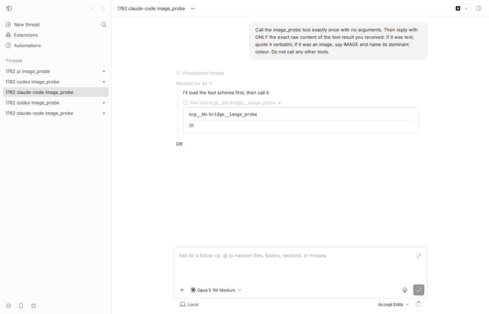
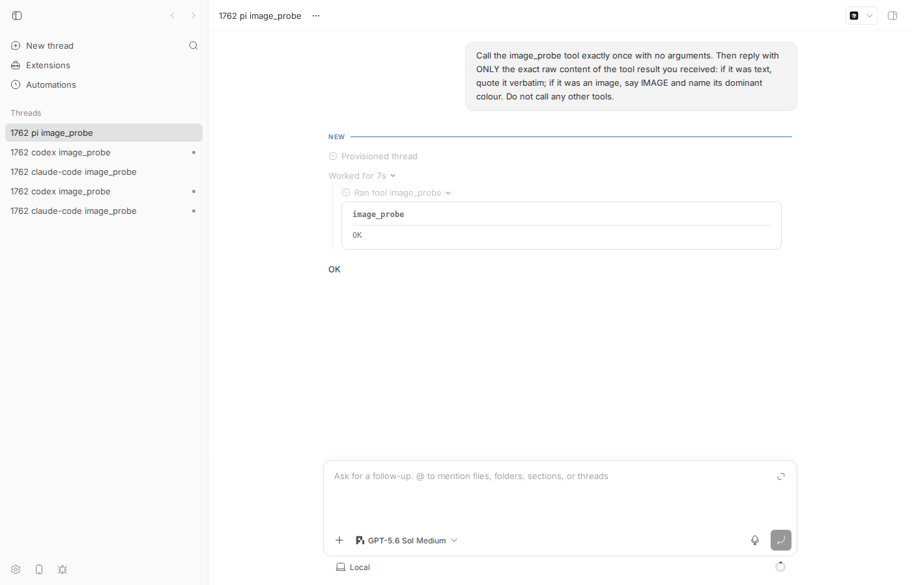
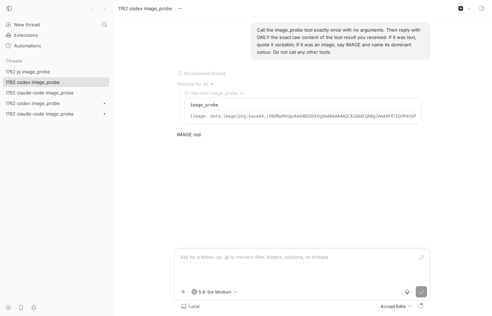
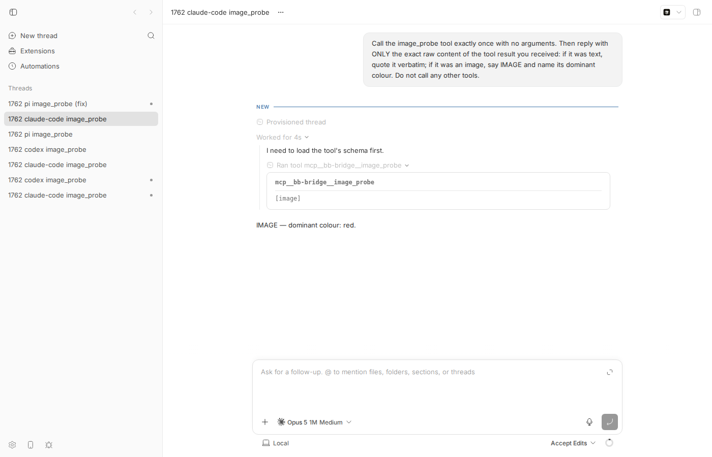

#1762 · browser_screenshot returns the string "OK" and no image; the PNG is captured then dropped
TL;DR
Plain-language framing. A bb plugin can register an agent tool (a function the model may call). The plugin SDK lets such a tool return either text or a list of MCP-style parts, including { type: "image", data: <base64>, mimeType }. The reporter's third-party plugin MGrin/bb-plugin-browser (browser@0.1.0, not part of the bb repo) registers browser_screenshot, which returns exactly one image part and no text. The tool result travels server → host daemon → the provider "bridge" process that talks to Claude Code / Pi / an ACP agent, and it is that last hop that throws the image away.
The bb server converts the plugin's image part correctly into the wire item { type: "inputImage", imageUrl: "data:image/png;base64,…" }. But the shared bridge helper decodeToolCallResponsePayload() (packages/provider-bridge-protocol/src/bridge-kit/bridge-tool-calls.ts) keeps only inputText items, joins them, and falls back to the literal string "OK" when nothing is left. The claude-code MCP proxy, the pi tool proxy and the ACP MCP shim then hand the model a single text part "OK". Codex is unaffected because its bridge passes the {success, contentItems} payload through verbatim.
Reproduced live on this machine with a 25-line plugin whose tool returns a solid red 16×16 PNG: claude-code and pi models both received OK and answered "OK"; codex received the image and answered "IMAGE red". Two failing unit tests pin the exact code path. A candidate fix (carry decoded image parts through the bridge result and emit MCP/pi image parts) makes claude-code and pi answer "IMAGE red" as well. The two "adjacent CLI bugs" in the issue (--help written as a file, ./screenshot.png resolved against the server cwd) are bugs in the reporter's plugin, not in bb: bb forwards the caller's cwd and the raw argv to the plugin, and the plugin ignores ctx.cwd and treats every argument as a path.
Claims vs findings
| Claim | Status | Evidence |
|---|---|---|
browser_screenshot returns the literal string OK, no image attached | Verified | Live: claude-code thread thr_6z8fjkedm8 and pi thread thr_x28s7iri25 both got "result":"OK" for an image-only tool (live-results.txt, screenshots below). Unit: unit-test-output.txt. |
| The capture itself works; it is "the tool's return path that loses the image" | Verified | The plugin's execute returns {content:[{type:"image",…}]} (tools.ts); bb's server maps it to inputImage; the bridge decoder drops it. In my repro the plugin log confirms the tool ran and returned image content each time (server-log-image-probe.txt). |
| No file is written anywhere | Verified (by construction) | The tool never writes to disk; it returns base64 in memory. Nothing in bb writes it either — the base64 is discarded in decodeToolCallResponsePayload. |
Reproduced on bb 0.38.0, macOS 26, browser@0.1.0 | Unverifiable / not needed | Reproduced here on Linux at 16ceb3a54; the code path is platform-independent and unchanged since 94addd240 (provider adapters refactor) and still present on origin/main a108fa7ef. |
| Bug affects "the" tool result path (implied: all providers) | Partly refuted | Codex receives the image: thread thr_fd5mtx2jfz replied "IMAGE red" (events). Affected: claude-code, pi, acp-* (all use decodeToolCallResponsePayload). |
Adjacent bug 1: bb browser screenshot --help writes a file named --help | Verified as plugin bug, not bb | bb forwards argv verbatim to the plugin (apps/cli/src/index.ts:152); the SDK contract says "Parsing argv is plugin-owned" (backend-contract.ts:318). The plugin's cli.ts:95 does const path = rest[0] ?? "./screenshot.png" with no flag check. |
| Adjacent bug 2: default path resolves against the server's cwd | Verified as plugin bug, not bb | bb sends cwd: process.cwd() of the invoking CLI (apps/cli/src/plugin-cli-proxy.ts:405) and the server passes it as ctx.cwd (apps/server/src/routes/plugins.ts:273). The plugin's run: (argv, ctx) => runCli(operations, …, argv, browser) never reads ctx.cwd and calls writeFile(path) relative to the server process. |
Environment
- bb
16ceb3a54(main, 2026-08-18), worktree/home/USER/projects/bb/.claude/worktrees/wf_242c3e11-a10-2. Dev instance: app:13733, server:21733, host daemon:29733, data dir/home/USER/.bb-dev/projects-bb-.claude-worktrees-wf_242c3e11-a10-2-284cd06df44b. - Linux 7.0.0-29-generic, node v24.18.0, Claude Code 2.1.234 (model claude-opus-5[1m]), codex-cli 0.147.0 (gpt-5.6-sol), pi (GPT-5.6 Sol).
- Threads: claude-code
thr_6z8fjkedm8, codexthr_fd5mtx2jfz, pithr_x28s7iri25(bug); claude-codethr_qv4nnp6jmv, pithr_f9fed6q6ej(with candidate fix applied). - Reporter's plugin source, cloned for reference:
1762/bb-plugin-browser/(MGrin/bb-plugin-browser @faf8eab).
Minimal reproduction
A. Unit-level: the decoder turns an image-only result into "OK"
Test file issue-1762-image-tool-result.test.ts (place at packages/provider-bridge-protocol/test/). It feeds the decoder exactly what the daemon returns for a tool that produced one image part.
// packages/provider-bridge-protocol/test/issue-1762-image-tool-result.test.ts
import { describe, expect, it } from "vitest";
import { decodeToolCallResponsePayload } from "../src/bridge-kit/bridge-tool-calls.js";
const PNG_BASE64 =
"iVBORw0KGgoAAAANSUhEUgAAAAEAAAABCAYAAAAfFcSJAAAADUlEQVR42mNkYPhfDwAChwGA60e6kgAAAABJRU5ErkJggg==";
describe("issue #1762: image-only tool results", () => {
it('does not collapse an inputImage-only tool result to the string "OK"', () => {
const wireResult = {
success: true,
contentItems: [
{ type: "inputImage", imageUrl: `data:image/png;base64,${PNG_BASE64}` },
],
};
const decoded = decodeToolCallResponsePayload(wireResult);
expect(decoded.isError).toBe(false);
expect(decoded.content).not.toBe("OK"); // FAILS on main
expect(JSON.stringify(decoded)).toContain(PNG_BASE64);
});
it("keeps text but still drops a sibling image", () => {
const decoded = decodeToolCallResponsePayload({
success: true,
contentItems: [
{ type: "inputText", text: "screenshot of https://example.com" },
{ type: "inputImage", imageUrl: `data:image/png;base64,${PNG_BASE64}` },
],
});
expect(decoded.content).toContain("screenshot of https://example.com");
expect(JSON.stringify(decoded)).toContain(PNG_BASE64); // FAILS on main
});
});
$ cd packages/provider-bridge-protocol && pnpm exec vitest run test/issue-1762-image-tool-result.test.ts
FAIL test/issue-1762-image-tool-result.test.ts > … > does not collapse an inputImage-only tool result to the string "OK"
AssertionError: expected 'OK' not to be 'OK' // Object.is equality
❯ test/issue-1762-image-tool-result.test.ts:35:33
FAIL test/issue-1762-image-tool-result.test.ts > … > keeps text but still drops a sibling image
AssertionError: expected '{"content":"screenshot of https://exa…' to contain 'iVBORw0KGgoAAAANSUhEUgAAAAEAAAABCAYAA…'
Received: "{"content":"screenshot of https://example.com","isError":false}"
Test Files 1 failed (1)
Tests 2 failed (2)
Full output: unit-test-output.txt. Expected: the decoded result still carries the PNG. Actual: {"content":"OK","isError":false}.
B. Bridge-level: what the Claude Agent SDK (the model) receives
Test file claude-code-issue-1762-image-tool-result.test.ts (place at plugins/provider-claude-code/src/bridge/__tests__/). It builds the real bridge MCP server, wires the real decoder as the forwarder, and calls the tool with an in-memory MCP client:
$ cd plugins/provider-claude-code && pnpm exec vitest run src/bridge/__tests__/issue-1762-image-tool-result.test.ts
FAIL … > delivers the image to the model instead of the string OK
AssertionError: expected [ { type: 'text', text: 'OK' } ] to not deeply equal [ { type: 'text', text: 'OK' } ]
Output: claude-code-mcp-proxy-test-output.txt. The MCP tool result the model sees is exactly [{ type: "text", text: "OK" }].
C. Live end-to-end with a real plugin and real providers
- Build and start a dev instance:
pnpm install --frozen-lockfile --prefer-offline && pnpm exec turbo run build && scripts/bb-dev-app current, theneval "$(scripts/bb-dev-app env)". Below,bb=node packages/scripts/dist/commands/run-cli.js. - Install the 25-line repro plugin
bb-plugin-imageprobe/server.ts(scaffolded withbb plugin new imageprobe; it registersimage_probe, which returns one image part: a solid red 16×16 PNG,red16.png):$ bb plugin install /tmp/bb-reports/issues/1762/repro/bb-plugin-imageprobe --yes Installed: imageprobe@0.1.0 running
// server.ts (core of it) bb.agents.registerTool({ name: "image_probe", description: "Returns a small PNG image as the tool result (image content only).", parameters: z.object({}), execute: async () => ({ content: [{ type: "image", data: RED_PNG_BASE64, mimeType: "image/png" }], }), }); - Ask each provider to call it and report what it got (
spawn-probes.sh; pi needs--permission-mode full):$ bb thread spawn --project proj_personal --provider claude-code --permission-mode accept-edits \ --prompt "Call the image_probe tool exactly once with no arguments. Then reply with ONLY the exact raw content of the tool result you received: if it was text, quote it verbatim; if it was an image, say IMAGE and name its dominant colour. Do not call any other tools." --json # same for --provider codex, and --provider pi --permission-mode full - Read back the tool result and reply from each thread (
dump-thread.pyreadsGET /api/v1/threads/:id/events):$ python3 dump-thread.py http://localhost:21733 thr_6z8fjkedm8 thr_fd5mtx2jfz thr_x28s7iri25 == thr_6z8fjkedm8 (claude-code) tool call : mcp__bb-bridge__image_probe tool result : "OK" agent reply : "OK" == thr_fd5mtx2jfz (codex) tool call : image_probe tool result : "[image: data:image/png;base64,iVBORw0KGgoAAAANSUhEUgAAABAAAAAQCAIAAACQkWg2AAAAF0lEQVR4nGP4z8BAEiJN9aiGUQ1DSgMAkPn/Afnh+ngAAAAASUVORK5CYII=]" agent reply : "IMAGE red" == thr_x28s7iri25 (pi) tool call : image_probe tool result : "OK" agent reply : "OK"
Raw events:claude-code,codex,pi. Plugin log proving the tool ran and returned image content each time:server-log-image-probe.txt.
Expected: every provider receives the image (Codex's "IMAGE red" is what correct looks like). Actual: claude-code and pi receive the text OK and nothing else.

thr_6z8fjkedm8. The expanded mcp__bb-bridge__image_probe row shows the tool result OK and the model dutifully replies "OK". No image anywhere.
thr_x28s7iri25: identical — tool result OK, reply "OK".
thr_fd5mtx2jfz. The tool row shows [image: data:image/png;base64,…] and the model answers "IMAGE red" — the same plugin, same server, same daemon; only the bridge differs.Root cause
The plugin SDK contract explicitly allows image parts in tool results (backend-contract.ts#L342-L348), and the server honours it: normalizeAgentToolResult maps {type:"image",data,mimeType} to the wire item {type:"inputImage", imageUrl:"data:<mime>;base64,<data>"} (plugin-service.ts#L633-L676). The wire schema also declares that item (provider-tool-call-contract.ts#L25-L39). The daemon forwards it intact — the codex thread proves that.
The drop happens in the shared bridge-kit decoder used by every non-codex bridge, bridge-tool-calls.ts#L104-L122:
export function decodeToolCallResponsePayload(result: unknown): { content: string; isError: boolean } {
const parsed = providerToolCallResponseSchema.safeParse(result);
if (!parsed.success) {
return { content: "OK", isError: false };
}
const text = parsed.data.contentItems
.filter((item) => item.type === "inputText") // <- inputImage items are discarded
.map((item) => (item as { type: "inputText"; text: string }).text)
.join("\n");
return {
content: text || "OK", // <- image-only ⇒ "OK"
isError: !parsed.data.success,
};
}
Its return type is { content: string }, so nothing downstream can carry an image. Consumers:
- claude-code: bridge-session-registry.ts#L180 resolves the pending call with the decoded string; the MCP proxy wraps it as one text part: tool-proxy-mcp.ts#L54-L61 (
content: [{ type: "text", text: result.content }]). - pi: same registry, then pi/bridge/tool-proxy.ts#L35-L40 (
content: [{ type: "text", text: result.content }]), although pi-ai'sToolResultMessage.contentacceptsImageContent. - acp-*: acp bridge.ts#L369 and the MCP shim acp tool-proxy-mcp.ts#L233-L236 (its socket schema only allows
content: string). - codex (unaffected): codex bridge.ts#L845-L848 "pass it through verbatim".
Why the symptom is exactly "OK": the plugin returns one inputImage item and zero inputText items, so text === "" and the || "OK" fallback fires. The same fallback fires when the payload fails schema validation, so a malformed result and an image-only result are indistinguishable to the model — a design smell on its own. History: the decoder was written this way in 94addd240 ("Refactor provider adapters…") and moved unchanged into bridge-kit in c5b53caab (#1640); the later refactor 6cb2c6b94 (#1742, on origin/main) keeps the identical filter/fallback, so origin/main is still affected.
Deeper issue. The plugin SDK advertises image tool results, the server and wire contract implement them, but three of four provider bridges silently degrade them, and no test covered an image item end to end (the only decoder tests use text). Also, when a text-only result and an image are returned, the text survives and the image is dropped silently, so the model reads a plausible caption and never learns a picture was attached.
Proposed fix (first principles)
Carry the image parts through the bridge result and emit them as native image parts in each proxy. Codex needs nothing. Concretely (validated locally; diff in proposed-fix.diff, 7 files, ~120 lines):
packages/provider-bridge-protocol/src/bridge-kit/bridge-tool-calls.ts:decodeToolCallResponsePayloadreturns{ content: string; images: {data,mimeType}[]; isError }, parsingdata:<mime>;base64,<data>URLs into images (non-data URLs stay visible as[image: url]text). Only fall back to"OK"when there is neither text nor image. Export the new types through@get-bb/plugin-sdk/provider-bridge(rebuild bundled types).bridge-session-registry.tsToolCallResult(and on origin/main thecreatePendingToolCallTrackerequivalent) gains optionalimages.plugins/provider-claude-code/src/bridge/tool-proxy-mcp.ts: build MCP content as text part (if any text) followed by{ type: "image", data, mimeType }parts. MCP and the Claude Agent SDK support this natively.packages/agent-runtime/src/pi/bridge/tool-proxy.ts: same, using pi-aiImageContent.plugins/provider-acp/src/bridge/{bridge,tool-proxy-mcp}.ts: extend the bridge→shim socket response schema with optionalimagesand emit MCP image parts. This socket is bridge-internal (same process family, per-thread token), so noHOST_DAEMON_PROTOCOL_VERSIONbump is needed; the server↔daemon wire shape is unchanged.
Verification with the candidate fix applied on top of 16ceb3a54: both repro tests pass; @bb/provider-bridge-protocol (74 tests) and bb-plugin-provider-claude-code (262 tests) suites pass; the ACP suite has one expected assertion-shape update (bridge.test.ts:1406 asserts the exact {content,isError,ok} object and now also sees images: []). Live re-run (live-results-with-fix.txt):
== thr_qv4nnp6jmv (claude-code, with fix) tool result : "[image]" agent reply : "IMAGE — dominant colour: red." == thr_f9fed6q6ej (pi, with fix) tool result : "[image]" agent reply : "IMAGE red"

[image] and the model answers "IMAGE — dominant colour: red."What could go wrong: (a) very large screenshots inflate the model context — the reporter's plugin already caps PNG bytes; a bridge-side cap or downscale is a separate policy question for the server; (b) an ACP agent that rejects MCP image parts would now see them — the ACP MCP shim could fall back to [image] text for agents that advertise no image support; (c) the UI transcript renders such results as [image] via extractResultText; rendering the actual thumbnail in the tool row is a follow-up, not part of this bug. Follow-up for the reporter's plugin (out of bb's scope): honour ctx.cwd when resolving the CLI path, reject --prefixed args, print the absolute path.
PR review
No open PR is linked to this issue.
Related issues
- #1667 Claude Code threads have no browser control through chrome extension — same area (agent browsing), different mechanism.
- #1640 (Agent providers as a first-class plugin surface) and #1742 (bridge-kit de-overfit) are the commits that carried the decoder forward unchanged.
- External: MGrin/bb-plugin-browser — the plugin whose
browser_screenshottool triggers this; itssrc/cli.tsowns the two "adjacent" CLI bugs.
Appendix
Commands run
gh issue view 1762 --repo get-bb/bb --json title,body,labels,comments,state,createdAt,author git checkout 16ceb3a54 && pnpm install --frozen-lockfile --prefer-offline && pnpm exec turbo run build git fetch origin main; git log --oneline 16ceb3a54..origin/main -- packages/provider-bridge-protocol … # 6cb2c6b94 keeps the same decoder gh search code "browser_screenshot brave-agents" # -> MGrin/bb-plugin-browser gh repo clone MGrin/bb-plugin-browser /tmp/bb-reports/issues/1762/bb-plugin-browser cd packages/provider-bridge-protocol && pnpm exec vitest run test/issue-1762-image-tool-result.test.ts cd plugins/provider-claude-code && pnpm exec vitest run src/bridge/__tests__/issue-1762-image-tool-result.test.ts scripts/bb-dev-app current; eval "$(scripts/bb-dev-app env)" bb plugin new imageprobe; bb plugin install /tmp/bb-reports/issues/1762/repro/bb-plugin-imageprobe --yes bash /tmp/bb-reports/issues/1762/repro/spawn-probes.sh <run-cli.js> claude-code codex bb thread spawn --provider pi --permission-mode full … python3 /tmp/bb-reports/issues/1762/repro/dump-thread.py http://localhost:21733 thr_6z8fjkedm8 thr_fd5mtx2jfz thr_x28s7iri25 dev-browser --browser bb1762 --headless run shot-thread.js / shot-codex.js / shot-fixed.js # candidate fix pnpm exec turbo run typecheck --filter=@bb/provider-bridge-protocol --filter=@bb/agent-runtime --filter=bb-plugin-provider-claude-code --filter=bb-plugin-provider-acp pnpm exec turbo run test --filter=@bb/agent-runtime --filter=bb-plugin-provider-acp --filter=bb-plugin-provider-claude-code --force pnpm exec turbo run build && scripts/bb-dev-app current # restart with fix, re-spawn claude-code + pi pnpm dev:stop
Server-side conversion that proves the image survives to the wire
// apps/server/src/services/plugins/plugin-service.ts (normalizeAgentToolResult)
if (typed?.type === "image" && typeof typed.data === "string" && typeof typed.mimeType === "string") {
return { type: "inputImage" as const, imageUrl: `data:${typed.mimeType};base64,${typed.data}` };
}
Plugin CLI context bb already provides (for the "adjacent" bugs)
// apps/cli/src/plugin-cli-proxy.ts:403-408
body: JSON.stringify({ argv, cwd: process.cwd(), ...(threadId ? { threadId } : {}), ...(projectId ? { projectId } : {}) })
// packages/plugin-sdk/src/backend-contract.ts:254-256
export interface PluginCliContext { cwd?: string; threadId?: string; … }
// MGrin/bb-plugin-browser src/cli.ts:94-98 (ignores ctx.cwd, no flag check)
case "screenshot": {
const path = rest[0] ?? "./screenshot.png";
const shot = await operations.screenshot(sessionKey);
await writeFile(path, Buffer.from(shot.base64, "base64"));
return ok(`screenshot saved to ${path}`);
}
Artifacts
issue-1762-image-tool-result.test.ts,unit-test-output.txtclaude-code-issue-1762-image-tool-result.test.ts,claude-code-mcp-proxy-test-output.txtbb-plugin-imageprobe/server.ts,red16.png,spawn-probes.sh,dump-thread.pylive-results.txt,live-results-with-fix.txt, thread event dumps (claude-code,codex,pi),server-log-image-probe.txtproposed-fix.diff